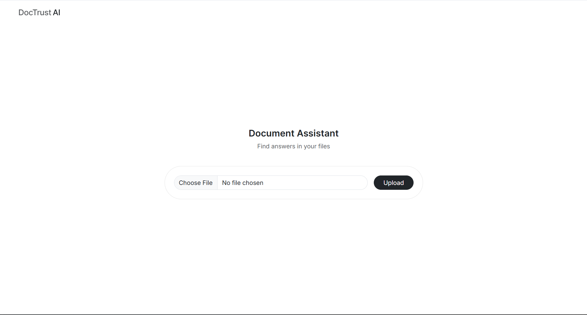
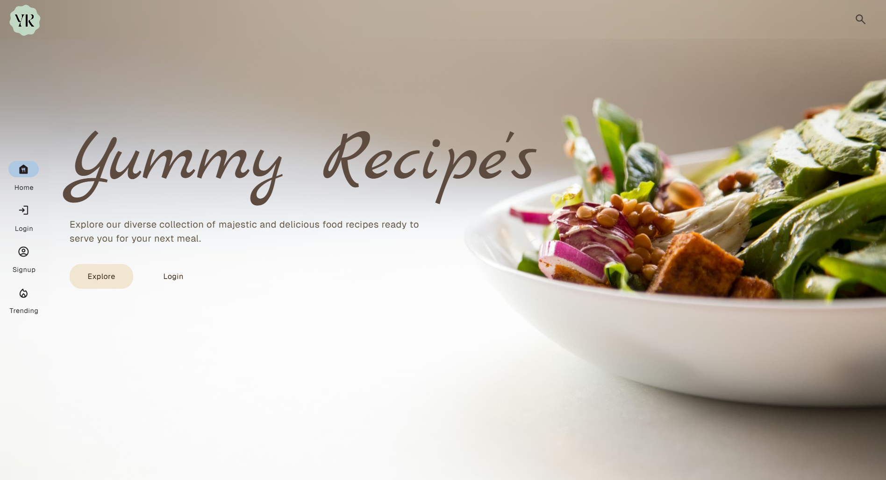

Multi-stage RAG pipeline for PDF-based document querying including BM25 and vector similarity combined via Reciprocal Rank Fusion for improved retrieval relevance, followed by cross-encoder reranking to refine chunks before LLM generation. A confidence scoring layer validates retrieval quality and filters low-context responses, reducing hallucinations. Integrated Gemini API with structured prompting and ChromaDB for document retrieval. Deployed on Railway.

Full-stack Django application with recipe discovery, user dashboards, and social interactions including authentication, notifications, and guest mode. Semantic search via vector embeddings, XGBoost cooking time prediction, and Gemini API for AI-powered recipe generation and summarization. Personalization features include time-based recommendations and a credit-based interaction model. Celery handles async embedding and search workflows; Redis for caching. Media on AWS S3. Deployed on Render.

Trained and evaluated multiple classification models for credit risk prediction, achieving 80% accuracy with balanced precision and recall. Reduced input features from 27 to 12 using feature importance, with SHAP explainability surfacing feature-level impact per prediction. Qwen 2.5 LLM converts model outputs into plain-language explanations. Deployed as a Django application on Render with authentication and prediction history tracking.